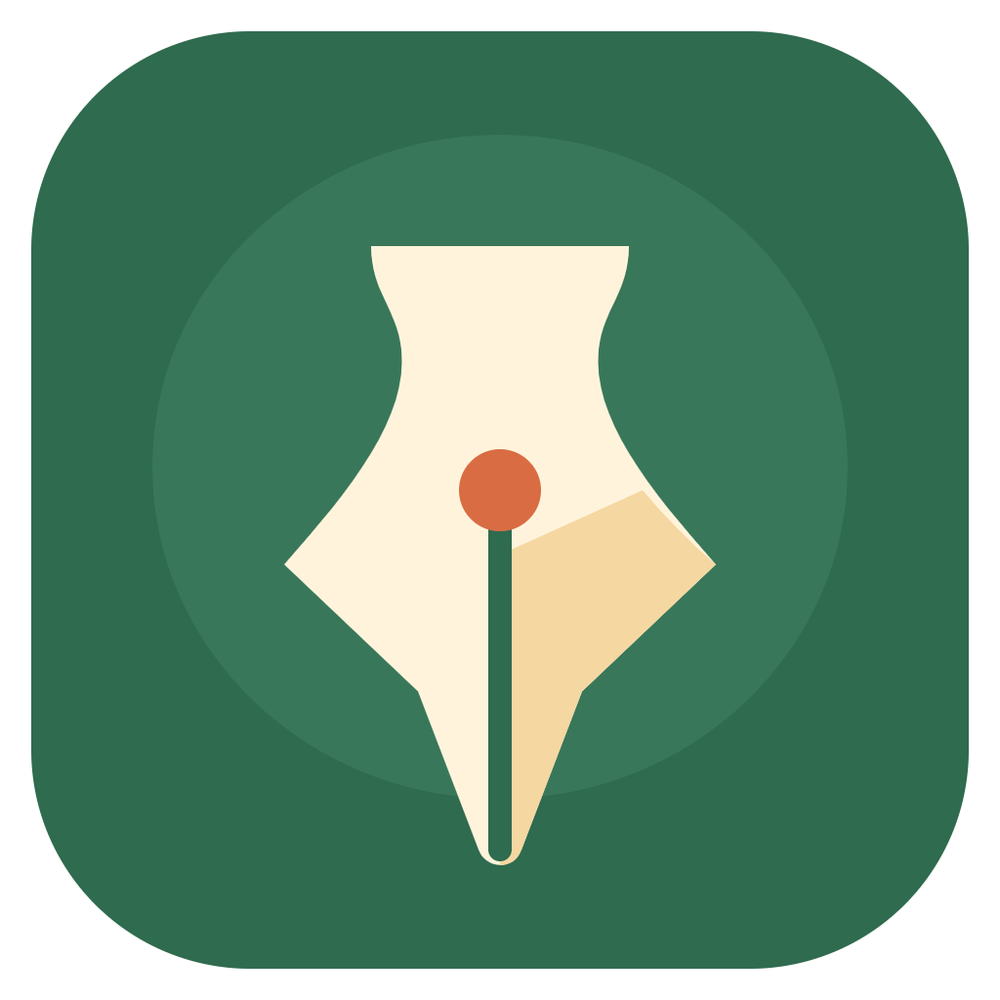

用分卷与章节组织一个完整的世界。
写下第一句话，让想法有一个安放的地方。
选择一篇要导出的文章。
保留原始 Markdown，适合继续编辑和迁移。
可跟随系统，或使用浅色、纯色深色与柔和护眼色。
用于侧栏的今日进度提示。
忘记钥匙串密码时，可重新输入 API Key 并选择“本次使用”。密钥仅留在内存，退出程序后清除。
Mac 和 Windows 使用同一网盘账户，在两台电脑选择对应的同步文件夹。写作内容自动合并，同时修改时保留冲突副本。
包含文章、分类、回收站、文章历史与写作统计。API 密钥和本机设置仅保存在本机。请将网盘文件夹设为“始终保留在此设备上”。
备份文件只保存在你选择的位置。